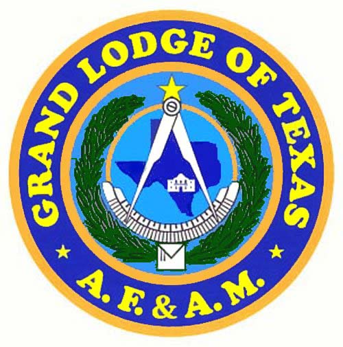

We also started up our 2026 Duck Creek Education Foundation fund raiser. This year we will be raffling two $300 Bass Pro gift cards.
MW Grand Master Jim Rumsey hosted his Grand Masters Conference on Saturday March 7 at the Valley of Dallas Scottish Rite Temple, in downtown Dallas. This was a highly informative Conference and is guaranteed to prompt discussions in all of our District 14 Lodges in the coming months.
2025-2026 Lodge Officers
| Office | Name |
|---|---|
| Worshipful Master | Paul Blumhardt |
| Senior Warden | Kenneth Lawrence |
| Junior Warden | Jeffrey Jacobie |
| Treasurer | Richard Logue |
| Secretary | Nick Oliver |
| Chaplain | Joseph W. French, Jr. |
| Senior Deacon | Westley M. Lund |
| Junior Deacon | Timothy N. Green |
| Marshall | Steve C. Moore |
| Master of Ceremonies | Anthony M. Ripps |
| Tiler | Michael D. Wellman |
Duck Creek Masonic Lodge is located at 600 N. 5th Street in Garland, TX
Stated Meetings are the second Monday of each Month at 7:00pm
The Duck Creek Education Foundation is a 501c(3) foundation and is accepting donations for school supplies and scholarship awards. Scholarships were awarded in May of 2025, and we continue to collect for the School Supply Drive to support the financially distressed elementary school children within Garland Independent School District. Contact the Lodge at 469-249-2076 for additional information. Click on This Link to donate to the Duck Creek Education Foundation using Square.

2025-2026 Officers
Front-Left to Right: Treasurer Richard Logue; Senior Warden Kenneth Lawrence; Worshipful Master Paul Blumhardt; Junior Warden Jeff Jacobie; Secretary Nick Oliver
Back Row-Left to Right: Junior Deacon Tim Green; Marshall Steve Moore; Senior Deacon Wes Lund; Chaplain Joseph W. French; Tiler Mike Wellman, Master of Ceremonies Mike Ripps